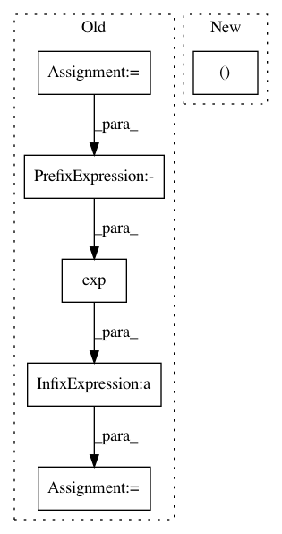

637ecf5877bbd6647caef2bd64925e66a586fb29,keras_rcnn/layers/losses/__init__.py,RCNN,regression_loss,#RCNN#,23
Before Change
target_scores = self.target_scores[:, :, 1:]
weights = keras.backend.sum(target_scores, axis=1)
weights = keras.backend.sum(target_scores) / keras.backend.maximum(weights, keras.backend.epsilon())
weights = 1.0 / (1 + keras.backend.exp(-weights))
// mask out output values where class is different from targetrcnn loss
// function
a = keras_rcnn.backend.where(keras.backend.equal(target_scores, 1))
a = keras.backend.cast(a, "int32")
rr = a[:, :2]
cc = a[:, 2:]
indices = [
keras.backend.concatenate([rr, cc * 4 + 0], 1),
keras.backend.concatenate([rr, cc * 4 + 1], 1),
keras.backend.concatenate([rr, cc * 4 + 2], 1),
keras.backend.concatenate([rr, cc * 4 + 3], 1)
]
indices = keras.backend.concatenate(indices, 0)
weights = keras.backend.sum(target_scores * weights, axis=-1)
weights = keras_rcnn.backend.gather_nd(weights, rr)
weights = keras.backend.reshape(weights, (-1,))
After Change
updates = keras.backend.ones_like(indices, dtype=keras.backend.floatx())
labels = keras_rcnn.backend.scatter_add_tensor(keras.backend.zeros_like(output_deltas, dtype="float32"), indices, updates[:, 0])
loss = keras_rcnn.backend.smooth_l1(output_deltas * labels, target_deltas * labels, anchored=True)
In pattern: SUPERPATTERN
Frequency: 4
Non-data size: 6
Instances
Project Name: broadinstitute/keras-rcnn
Commit Name: 637ecf5877bbd6647caef2bd64925e66a586fb29
Time: 2018-01-30
Author: allen.goodman@icloud.com
File Name: keras_rcnn/layers/losses/__init__.py
Class Name: RCNN
Method Name: regression_loss
Project Name: tensorflow/privacy
Commit Name: cec011e2a797a32a9b102a69d2d799256de7ca98
Time: 2020-06-08
Author: galenandrew@google.com
File Name: tensorflow_privacy/privacy/dp_query/quantile_adaptive_clip_sum_query.py
Class Name: QuantileAdaptiveClipSumQuery
Method Name: get_noised_result
Project Name: SheffieldML/GPy
Commit Name: c0b94f051b458fdf27e41b2b4631421180b8883c
Time: 2013-10-22
Author: alan.daniel.saul@gmail.com
File Name: GPy/likelihoods/noise_models/noise_distributions.py
Class Name: NoiseDistribution
Method Name: _predictive_variance_numerical
Project Name: SheffieldML/GPy
Commit Name: c0b94f051b458fdf27e41b2b4631421180b8883c
Time: 2013-10-22
Author: alan.daniel.saul@gmail.com
File Name: GPy/likelihoods/noise_models/noise_distributions.py
Class Name: NoiseDistribution
Method Name: _predictive_mean_numerical